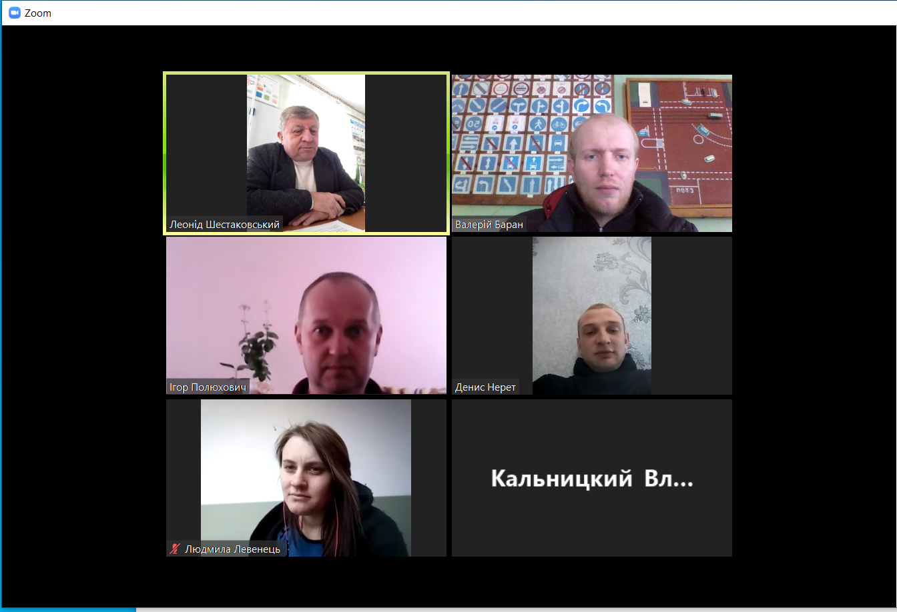

Відбувся семінар директорів та їх заступників МНВК/МРЦ
18 лютого 2026 року за планом Навчально-методичного центру професійно-технічної освіти у Чернігівській області в онлайн-форматі був проведений семінар з директорами МНВК/МРЦ та їх заступниками. Учасники заходу обговорили ряд актуальних питань, зокрема:
- «Отримання критичної інфраструктури для бронювання водіїв» – доповідач Ігор ПОЛЮХОВИЧ, директор Степанівського МНВК;
- «Шляхи реформування МНВК/МРЦ в умовах реформування старшої профільної школи» – доповідач Віктор ГРІНЕНКО, методист НМЦ ПТО у Чернігівській області;
- «Питання розробки робочих навчальних планів з ліцензованих професій на даний час» – доповідач Олександр ГОРОНОВИЧ, методист НМЦ ПТО у Чернігівській області.
Після розгляду порядку денного методист НМЦ ПТО у Чернігівській області Віктор ПРОНЬКО провів круглий стіл з обговорення проблемних питань діяльності МНВК (МРЦ) області та підсумував роботу семінару.
30.10.2025
15 жовтня на базі обласного інституту післядипломної педагогічної освіти ім. К.Д.Ушинського відбулось засідання координаційної ради МНВК (МРЦ) Чернігівської області. На засідання окрім керівників міжшкільних комбінатів були запрошені представники закладів професійної освіти інших форм власності. Учасники заходу обговорили ряд актуальних питань, зокрема:
- Зміни в законодавстві. Новий закон «Про професійну освіту» та особливості його застосування для закладів професійної освіти всіх типів та форм власності – доповідач Віктор ГРІНЕНКО (методист НМЦ ПТО у Чернігівській області)
- Про порядок акредитації та діяльність кваліфікаційних центрів на базі закладів професійної освіти – Віктор ПРОНЬКО (методист НМЦ ПТО у Чернігівській області)
- Інструктивно-методичні рекомендації щодо викладання предмету «Технології» у 2025-2026 н.р. Здійснення професійного навчання на базі МНВК (МРЦ) – Ігор ПОЛЮХОВИЧ ( директор Степанівського МНВК); Після розгляду порядку денного проведено круглий стіл з обговорення проблемних питань діяльності МНВК (МРЦ) області, їх роль та місце при реалізації стратегії впровадження старшої профільної школи. На завершення вирішено організаційне питання щодо переобрання нового голови обласної координаційної ради замість Леоніда Шестаківського, який прийняв рішення піти на заслужений відпочинок. Новим головою за одноголосним схваленням обрано новопризначеного директора Степанівського МНВК Ігоря Полюховича.
14.08.2025
Лист МОН
№1/16828-25 від 13.08.2025
Про інструктивно-методичні рекомендації щодо викладання навчальних предметів / інтегрованих курсів у закладах загальної середньої освіти у 2025/2026 навчальному році
Освітній навігатор на 2025/2026 навчальний рік
Для викладання у 9-11 класах за Державним стандартом базової і повної загальної середньої освіти чинними залишаються інструктивно-методичні рекомендації щодо викладання навчальних предметів / інтегрованих курсів у закладах загальної середньої освіти у 2024/2025 навчальному році (лист МОН від 30.08.2024 1.1/15776-24).
Додаток до листа МОН
від 30.08.2024 1.1/15776-24
ІНСТРУКТИВНО-МЕТОДИЧНІ РЕКОМЕНДАЦІЇ
щодо викладання навчальних предметів / інтегрованих курсів у закладах загальної середньої освіти у 2024/2025 навчальному році 8. ТЕХНОЛОГІЧНА ОСВІТНЯ ГАЛУЗЬ 10–11 класи ТЕХНОЛОГІЇ
Типовою освітньою програмою на вивчення предмета «Технології» у 10 та 11 класах на профільному рівні передбачається по 6 годин на тиждень. Заклад освіти може збільшувати кількість годин на вивчення профільного предмета за рахунок додаткових годин навчального плану. Навчання здійснюється за однією з профільних програм, що розміщені на офіційному сайті Міністерства освіти і науки України, чи за програмами професійного навчання, затвердженими МОН від 23.09.2010 № 904 з використанням, за потреби, часу навчальної практики у 10 класі. Здійснення професійно-технічного навчання в закладах загальної середньої освіти та міжшкільних навчально-виробничих комбінатах (міжшкільних ресурсних центрах) можливе і за іншими професіями, за умови дотримання вимог Державних стандартів професійної (професійно-технічної) освіти. У разі, коли кількість годин на опанування професії менша від передбаченої навчальним планом, рекомендуємо запроваджувати профільні курси та курси за вибором профорієнтаційного спрямування, які мають відповідний гриф МОН. Змістове наповнення технологічного профілю також може складатися з декількох курсів за вибором «Професійні проби». Такі курси опановуються учнівством послідовно, а їх програми повинні мати відповідний гриф МОН. Курси за вибором «Професійні проби» можуть впроваджуватися за рахунок варіативного складника навчальних планів для учнів та учениць, які навчаються за будь-яким профілем. Здійснювати навчання технологій можна в міжшкільних навчальновиробничих комбінатах (міжшкільних ресурсних центрах) відповідно до цивільноправових договорів, укладених із закладами освіти, фізичними та юридичними особами, відповідно до Положення про міжшкільний навчально-виробничий комбінат та Положення про міжшкільний ресурсний центр, затвердженого наказом Міністерства освіти і науки України 09 листопада 2018 року №1221, зареєстрованим в Міністерстві юстиції України 18 січня 2019 р. за №63/33034, (зі змінами у відповідності до наказу МОН № 619 від 08.07.2022 року) за умови дотримання вимог Державних стандартів. Це сприятиме поглибленому вивченню навчальних предметів освітньої галузі «Технології» та реалізації варіативного (курсів за вибором, факультативів профорієнтаційного та іншого спрямування) складника освітніх програм (навчальних планів).
21.10.2024 - 02.05.2025
З 21.10.24 по 02.05.25р. на базі Степанівського МНВК проходила перепідготовку група слухачів по направленню центру зайнятості за професією «Тракторист-машиніст с/г виробництва» категорії «А1».
Слухачі опанували теоретичний курс, пройшли виробниче навчання та виробничу практику і успішно склали випускні іспити та отримали свідоцтва про присвоєння робітничої кваліфікації.

01.04.25
Профорієнтаційна онлайн-зустріч учнів Степанівського МНВК з учнівським самоврядуванням закладів професійно-технічної освіти
За підтримки Світлани Поклад, методиста НМЦ ПТО у Чернігівській області сьогодні відбулася змістовна профорієнтаційна онлайн-зустріч за участі представників учнівського самоврядування закладів професійно - технічної освіти.
Учениці Чернігівського вищого професійного училища побутового обслуговування розпочали натхненну зустріч, познайомивши учнів з творчими професіями свого навчального закладу. Творча дівчина цього закладу, яка навчається за спеціальністю «Кравець», поділилася своїм навчальним досвідом та презентувала власну колекцію одягу, створену під час навчання. Це яскравий приклад того, як здобуті знання та навички можуть реалізовуватися у творчих проєктах.Детальніше на сайті: https://4vpupo.org.ua/
Представники Чернігівського професійного будівельного ліцею ліцею розповіли про професії, які можна здобути в їхньому закладі, зокрема: муляр, монтажник з монтажу сталевих та залізобетонних конструкцій, електрозварник ручного зварювання, штукатур, лицювальник-плиточник, маляр та електромонтер з ремонту та обслуговування електроустаткуванн. Вони детально описали особливості кожної професії, перспективи працевлаштування та важливість кваліфікованих кадрів у будівельній галузі. Детальніше на сайті: https://tschpbl.in.ua/
Представники Чернігівського вищого професійного училища ознайомили учасників із професіями, які можна здобути в їхньому закладі, зокрема: верстатник широкого профілю, слюсар-ремонтник та слюсар з механоскладальних робіт. Вони розповіли про сучасні навчально-практичні центри, що функціонують на базі училища, та підкреслили можливості для студентів у розвитку професійних навичок. Детальніше на офіційному сайті: https://cvpu.edu.ua/pro-specialnosti-ta-profesiyi/
Окрім цього, учасники зустрічі обговорили умови проживання в гуртожитках навчальних закладів. Було зазначено, що гуртожитки забезпечені необхідними зручностями, створюють комфортні умови для проживання та сприяють формуванню дружньої студентської спільноти. Представники закладів відповіли на запитання учнів, надали вичерпну інформацію про навчальний процес, позаурочні заходи та можливості самореалізації під час навчання.
13.03.25
Забезпечення якісних освітніх послуг є одним із найбільш важливих і соціально чутливих завдань об’єднаних громад. Майже в кожній громаді послуги освіти стосуються не менше 30% населення громади (діти, їх батьки, вчителі), освіта складає до 45% видаткової частини місцевого бюджету, діяльність освітньої мережі забезпечує постійною роботою до 25% працездатного населення громад. Але в цьому напрямку також багато викликів.
Тому, експертами шведсько-українського проекту “Підтримка децентралізації в Україні” розпочато створення першої спеціалізованої он-лайн платформи “Кращі практики управління освітою”. З 2024 року сайт підтримується шведсько-українською Програмою Polaris “Підтримка багаторівневого врядування в Україні”.
Пропонуємо до розгляду досвід впровадження практики в Степанівському МНВК "Професійні проби, як елемент усвідомленого вибору освітньої траєкторії в профільній школі", яка була запроваджена для вирішення проблеми невизначеності учнів щодо вибору майбутньої професії та освітньої траєкторії. https://wiki.polaris.org.ua/
4.02.25
У Степанівському МНВК активно впроваджується курс «Компанія» від ГО Junior Achievement Ukraine! У рамках курсу на базі комбінату успішно функціонує міні - компанія "Швейна майстерня", яка спеціалізується на виготовленні якісних та стильних шоперів, а також предметів декору для дому.
Для учениць Волосківської гімназії майстринями було проведено профорієнтаційний захід «День професії: швачка», який надав унікальну можливість спробувати себе в ролі майстрині швейної справи.
Учасниці заходу не лише дізналися про особливості професії, а й власноруч створили унікальні шопери, продумавши їхній дизайн та виконавши пошиття під керівництвом досвідчених наставників.
Такий формат заходу допоміг на практиці відчути специфіку роботи, розкрити творчий потенціал і усвідомити важливість швейної майстерності.
«Спробуй себе у ролі швачки» – це своєрідна професійна проба, що сприяє популяризації робітничих професій, знайомить молодь із перспективами розвитку у сфері текстильного виробництва та мотивує до здобуття фахових навичок.
Захід довів, що професія швачки є не лише корисною, а й творчою, сучасною та затребуваною, відкриваючи широкі можливості для кар’єрного зростання.
30.01.25
Профорієнтаційна зустріч з викладачами – це унікальна можливість для майбутніх абітурієнтів дізнатися більше про обрані спеціальності, особливості навчального процесу та перспективи професійного розвитку. Таку можливість мали учні комбінату, поспілкуватися з викладачами фахового коледжу "Університет трансформації майбутнього"
Під час заходу викладачі розповіли про навчальні програми, умови вступу, специфіку роботи за різними напрямами, а також відповіли на запитання учасників. Такі зустрічі допомагають майбутнім студентам краще усвідомити свої інтереси, оцінити відповідність здібностей обраній професії та прийняти виважене рішення щодо подальшого навчання.
29.01.25
Учні Степанівського МНВК мали можливість познайомитися з діяльністю команди "Сімаргл", які створили власний історичний клуб у місті Чернігів. Історичний клуб покликаний зацікавити молодь до вивчення історії України та надати молоді навички, щоб досліджувати цікаві теми. Під час зустрічі учні комбінату мали змогу прийняти участь у інтелектуальній грі та отримати подарунки.
Окрім цього, представники клубу розповіли про свою діяльність, поділилися цікавими історичними фактами та продемонстрували автентичні реконструкції історичних подій. Учасники заходу змогли відчути себе справжніми дослідниками минулого, отримати нові знання про культуру та традиції різних епох.
Зустріч пройшла у дружній атмосфері, надихнувши школярів на подальше вивчення історії та активну участь у подібних заходах. Такі ініціативи сприяють розвитку інтересу молоді до історичної спадщини України та формують патріотичну свідомість.
28.11.24
Відбулось засідання обласної методичної секції педагогічних працівників сільськогосподарських професій та автомобільної галузі закладів професійної (професійно-технічної) освіти Чернігівщині
27 листопада 2024 року Навчально-методичним центром професійно-технічної освіти у Чернігівській області на платформі Zoom проведено онлайн-засідання обласної секції педагогічних працівників сільськогосподарських професій та автомобільної галузі закладів професійної (професійно-технічної) освіти Чернігівщини.
Відкрила засідання в.о. директора НМЦ ПТО у Чернігівській області Тетяна Головешкіна, яка привітала учасників засідання та акцентувала їх увагу на актуальних питаннях розвитку і подальшої роботи професійної освіти Чернігівщини.
Учасники вебінару мали змогу ознайомитись з напрямками оцінювання педагогічних працівників ЗПО відповідно до орієнтовних критеріїв оцінювання освітніх і управлінських процесів закладу професійної (професійно-технічної) освіти та внутрішньої системи забезпечення якості освіти, які представила Тетяна Потапова, головний спеціаліст відділу інституційного аудиту управління Державної служби якості освіти у Чернігівській області.
Педагогічний колектив Сосницького професійного аграрного ліцею поділився власним досвідом з реалізації важливих аспектів та підходів щодо оптимізації процесу початкового навчання керування трактором, використання незамінного інструменту сучасного автомеханіка автомобільних сканерів, ролі НПЦ у впровадженні сучасних аграрних технологій.
Учасників вебінару Ігор Полюхович, заступник директора НВР Степанівського міжшкільного навчально-виробничого комбінату ознайомив з основними змінами законодавчої бази щодо підготовки водіїв автотранспортних засобів.
14.11.24
Профорієнтаційна зустріч об'єднала учасників Сновського вищого училища лісового господарства та учнів Степанівського МНВК. Саме креативні викладачі підготували та провели майстер - класи,які дозволили учням спробувати себе у ролі кухаря,маляра, переглянути надзвичайні вироби з дерева та зрозуміти, наскільки популярними та необхідними є робітничі професії.
Під час заходу школярі мали змогу не лише отримати цінний досвід, а й поспілкуватися з викладачами та студентами училища, дізнатися більше про умови навчання, перспективи працевлаштування та можливості кар’єрного зростання. Атмосфера заходу була дружньою та натхненною, а інтерактивний формат дозволив кожному учаснику відчути себе частиною професійної спільноти.
Такі зустрічі допомагають молоді усвідомлено обирати майбутню професію, орієнтуючись на власні інтереси та здібності, а також сприяють популяризації робітничих спеціальностей, які є затребуваними на сучасному ринку праці.
13.11.24
13 листопада у м. Києві відбувся "Табір підприємництва" від Junior Achievement Ukraine для учасників, що навчаються за програмою "Компанія" з Чернігівської, Полтавської, Одеської та Київської областей.
Міні - компанія " Швейна майстерня" Степанівського МНВК презентувала свою бізнес ідею.
На табір прибуло 18 мінікомпаній, в тому числі і 5 з Чернігівщини.
Учасники табору мали змогу отримати знання з фінансового обліку для мінікомпаній та гідно презентували власні бізнес-ідеї. Викладачі та учні отримали сертифікати від організаторів,що підтверджують набуті знання з підприємницької діяльності.
1.11.24
01 листопала 2024 року на базі ЧОІППО ім.К.Д.Ушинського відбулось засідання Координаційної рада директорів МНВК(МРЦ) Чернігівської області. З вітальним словом до учасників засідання звернулась в.о. директора НМЦ ПТО у Чернігівській області Тетяна Головешкіна.
На засіданні були обговорені наступні питання:
-
Реформування сучасної української старшої школи.
доповідач Анатолій ЗАЛІСЬКИЙ -ректор ЧОІППО ім..К.Д.Ушинського. -
Іструктивно-методичні рекомендації щодо викладання
предмету«Технології» у 2024-2025 н.р. Здійснення
професійно-технічного навчання на базі МНВК (МРЦ).
Леонід ШЕСТАКОВСЬКИЙ.-голова Координаційної ради, директор Степанівського МНВК -
Зміни на законодавчому рівні з питань підготовки
водіїв.
Олександр ГОРОНОВИЧ -методист НМЦ ПТО у Чернігівській області,
Ігор ПОЛЮХОВИЧ - Заступник директора Степанівського МНВК. -
Зміни в законодавстві з питань атестації та
ліцензування закладів професійної
(професійно-технічної) освіти І атестаційного рівня
.
Віктор ПРОНЬКО -методист НМЦ ПТО у Чернігівській області. -
Про моделювання мережі старшої профільної школи в
Чернігівській області. Створення та діяльність
кваліфікаційних центрів на базі закладів освіти
Віктор ГРІНЕНКО-методист НМЦ ПТО у Чернігівській області. -
Про досвід організації профорієнтаційної роботи в
Степанівському МНВК
Людмила ЛЕВЕНЕЦЬ-методист Степанівського МНВК
Завершилось засідання обговоренням проблемних питань діяльності МНВК (МРЦ) області їх ролі та місці в освітній сфері регіону.
Додаток до листа МОН
від 30.08.2024 1.1/15776-24
ІНСТРУКТИВНО-МЕТОДИЧНІ РЕКОМЕНДАЦІЇ
щодо викладання навчальних предметів / інтегрованих курсів у закладах загальної середньої освіти у 2024/2025 навчальному році 8. ТЕХНОЛОГІЧНА ОСВІТНЯ ГАЛУЗЬ 10–11 класи ТЕХНОЛОГІЇ
Типовою освітньою програмою на вивчення предмета «Технології» у 10 та 11 класах на профільному рівні передбачається по 6 годин на тиждень. Заклад освіти може збільшувати кількість годин на вивчення профільного предмета за рахунок додаткових годин навчального плану. Навчання здійснюється за однією з профільних програм, що розміщені на офіційному сайті Міністерства освіти і науки України, чи за програмами професійного навчання, затвердженими МОН від 23.09.2010 № 904 з використанням, за потреби, часу навчальної практики у 10 класі. Здійснення професійно-технічного навчання в закладах загальної середньої освіти та міжшкільних навчально-виробничих комбінатах (міжшкільних ресурсних центрах) можливе і за іншими професіями, за умови дотримання вимог Державних стандартів професійної (професійно-технічної) освіти. У разі, коли кількість годин на опанування професії менша від передбаченої навчальним планом, рекомендуємо запроваджувати профільні курси та курси за вибором профорієнтаційного спрямування, які мають відповідний гриф МОН. Змістове наповнення технологічного профілю також може складатися з декількох курсів за вибором «Професійні проби». Такі курси опановуються учнівством послідовно, а їх програми повинні мати відповідний гриф МОН. Курси за вибором «Професійні проби» можуть впроваджуватися за рахунок варіативного складника навчальних планів для учнів та учениць, які навчаються за будь-яким профілем. Здійснювати навчання технологій можна в міжшкільних навчальновиробничих комбінатах (міжшкільних ресурсних центрах) відповідно до цивільноправових договорів, укладених із закладами освіти, фізичними та юридичними особами, відповідно до Положення про міжшкільний навчально-виробничий комбінат та Положення про міжшкільний ресурсний центр, затвердженого наказом Міністерства освіти і науки України 09 листопада 2018 року №1221, зареєстрованим в Міністерстві юстиції України 18 січня 2019 р. за №63/33034, (зі змінами у відповідності до наказу МОН № 619 від 08.07.2022 року) за умови дотримання вимог Державних стандартів. Це сприятиме поглибленому вивченню навчальних предметів освітньої галузі «Технології» та реалізації варіативного (курсів за вибором, факультативів профорієнтаційного та іншого спрямування) складника освітніх програм (навчальних планів).05.04.2024
Навчально-методичний центр професійно-технічної освіти у Чернігівській області з метою піднесення престижності професійної освіти і популяризації робітничих професій, визначення рівня професійно-теоретичної підготовки здобувачів освіти з професії «Тракторист-машиніст сільськогосподарського виробництва» категорії «А1» 5 квітня 2024 року провів в режимі Zoom-конференції теоретичний турнір.
У змаганні взяли участь 18 здобувачі освіти із 8 закладів П(ПТ)О області, а саме: ДНЗ «Ніжинський професійний аграрний ліцей», Сосницький професійний аграрний ліцей, Дігтярівський професійний аграрний ліцей, Сокиринський професійний аграрний ліцей, ДПТНЗ «Куликівський професійний аграрний ліцей», Мринська філія ДПТНЗ «Куликівський професійний аграрний ліцей», ДПТНЗ «Ічнянський професійний аграрний ліцей» та Степанівський міжшкільний навчально-виробничий комбінат.
Відповідно до набраної кількості балів визначено
переможців.
Учасник змагань від Степанівського МНВК Нежинець
Максим посів 4 місце і відзначений подякою НМЦ ПТО у
Чернігівській області.


08.02.2024
Тетяна Леонідівна, ректор університету, ознайомила учнів з особливостями вступу та навчання. Зокрема, учні дізналися, що ЧІІБіП є закладом вищої освіти нового типу, який комплексно поєднує фундаментальну підготовку фахівців в галузях програмування, підприємництва, менеджменту, публічного управління та права. При викладанні використовуються найсучасніші досягнення світової науки. Також, учні побачили гуртожитки, в яких проживають студенти.
Студенти ЧІБіП провели з учнями профорієнтаційні ігри, які дозволили учням поринути в світ професій та дізнатися цікаву інформацію про нові професії. Також, учні комбінату поспілкувалися особисто зі студентами, дізнавшись відповіді на питання, які цікавлять. Приємним сюрпризом стали подарунки, які учні отримали за активність у профорієнтаційному івенті.


09.01.2024


13.11.2023
15.09.2023
Лист
Додаток
15.05.2023
Одним із завдань повної загальної середньої освіти є виховання особистості, яка здатна до життя в суспільстві та готова до свідомого життєвого вибору, трудової діяльності і самореалізації. Якраз цьому слугує професійна підготовка, яка здійснюється на базі МНВК та МРЦ.
Відповідно до Типової програми атестаційної експертизи та критеріїв оцінки результатів діяльності професійно-технічних навчальних закладів з 09.05.2023р. по 12.05.2023р. здійснено атестаційну експертизу Степанівського міжшкільного навчально-виробничого комбінату на право провадження професійної освіти з професій:
- «4112 Оператор комп’ютерного набору»
- «4211 Касир (на підприємстві, в установі, організації)»
- «8321 Водій мототранспортних засобів (категорія «А»)»
- «8322 Водій автотранспортних засобів (категорія «В») (категорія «С») (категорія «С1»)»
- «8331 Тракторист-машиніст сільськогосподарського виробництва (категорія «А1»)»
Атестаційну експертизу здійснювала атестаційна комісія в яку входили експерти: навчально-методичного центру професійно-технічної освіти у Чернігівській області, професійно-технічних закладів вищих рівнів, РСТК ТСОУ, базових підприємств, роботодавців та інших навчальних закладів, які здійснюють професійну підготовку. Наказом Управління освіти і науки Чернігівської ОДА головою Атестаційної комісії було призначено – Гріненка Віктора Володимировича - директора навчально-методичного центру професійно-технічної освіти у Чернігівській області.
Випускники виконували комплексно кваліфікаційні завдання з теорії, але особлива увага приділена виконанню практичних комплексно кваліфікаційних завдань.
Учні продемонстрували, в основному, середній та достатній рівень знань та умінь за здобутою робітничою професію.
24.04.2023
З 8 по 12 травня 2023 року проводитиметься атестаційна експертиза Степанівського МНВК з метою визначення спроможності навчального закладу здійснювати освітню діяльність на рівні державних вимог (стандартів).
Буде здійснено:- аналіз і оцінка реального стану організації та здійснення навчально-виховного процесу;
- оцінка відповідності знань, умінь і навичок учнів, слухачів вимогам навчальних планів і програм;
- визначення відповідності умов професійно-технічної освіти, наявної матеріально-технічної та навчально-методичної бази вимогам навчальних планів і програм;
- оцінка якісного складу педагогічних і керівних працівників.
Розроблені, погоджені НМЦ ПТО в Чернігівській області та затверджені обласним управлінням освіти комплексно-кваліфікаційні завдання (ККЗ) з професійно-теоретичної та професійно-практичної підготовки по професіях, які будуть використані при оцінці знань, умінь і навичок учнів.
Увага!
З 17.10.2022 в зв’язку з загрозою обстрілів у Степанівському МНВК застосовується дистанційна форма навчання із професій:
- Водій категорії “В”;
- Водій категорії “С1”;
- Інформаційні технології
- Тракторист-машиніст с/г виробництва категорії “А1”.
Теоретичний матеріал та завдання розміщені за посиланням Дистанційне навчання
Державна кваліфікаційна атестація
Про проходження першого етапу державної кваліфікаційної атестації з професій.
Для проходження атестації необхідно зайти в систему дистанційного навчання (обрати свою школу, обрати себе із списку учнів, ввести ваш пін-код), обрати професію, за якою ви проходили навчання. Із підсумкових іспитів обрати потрібний іспит та натиснути кнопку “Розпочати”.
Доступ до екзаменаційних білетів буде надано в день іспиту о 10:00 за наступним графіком:
| Дата | Школи |
| 26.04.2022 | Синявська, Дягівська |
| 27.04.2022 | Покровська, Киселівська |
| 28.04.2022 | Макошинська, Березнянська, Стольненська, Локнистенська |
Тест виконується на протязі часу указаному в коментарі
до тесту перед кнопкою “Розпочати”.
Робота над тестом триває не більше вказаного часу і
тільки один раз.
06.04.2022
Звертаємося до випускників 2022 року, щодо здачі державної кваліфікаційної атестації за дистанційною формою
З метою завершення освітнього процесу вчасно, у визначені освітніми програмами терміни, організовується проведення Державної кваліфікаційної атестації (ДКА) з професій у дистанційній формі. В разі згоди учня 11-го класу на проведення ДКА у дистанційній формі просимо направити на електронну пошту Степанівського МНВК - stepmnvk@gmail.com
До 15.04.2022 року відповідний лист-згоду з обов’язковим зазначенням номера мобільного телефону, електронної адреси або інших засобів зв’язку, через які буде здійснюватися прийом екзамену.
Зразок листа:
- Я Прізвище ім’я по батькові, навчаюсь за спеціальністю (водій, тракторист, ІТ)
- даю згоду на проведення ДКА в дистанційній формі.
- Номер телефону +380**-*******
- Електронна пошта:***********@gmail.com
Увага!!!
В разі ненадходження листа у визначений термін учень буде недопущений до ДКА.
Перший етап Державної кваліфікаційної атестації з професій відбудеться 26, 27, 28 квітня згідно з розкладом занять кожної групи.
05.04.2022
05.03.2022
З 07.03.2022 в Степанівському МНВК впроваджується дистанційне навчання. Учням терміново зареєструватись, надіслати на електронну пошту викладачів предметів свої актуальні контактні дані та постійно тримати контакт із керівником групи.
25.02.2022
З 24.02.2022 по 04.03.2022 в Степанівському МНВК оголошуються канікули.
Просимо ознайомитись з інстуктажем з техніки безпеки
09.02.2022
Сьогодні пройшов погодження в профільному комітеті ВР з питань освіти, науки та інновацій Проект Закону про внесення змін до статті 103-2 Бюджетного кодексу України щодо фінансування міжшкільних ресурсних центрів (міжшкільних навчально-виробничих комбінатів) http://w1.c1.rada.gov.ua/pls/zweb2/webproc4_1?pf3511=71221
14.01.2022
Лист МОН №4/1324-21 від 29.12.2021 Для Координаційної ради директорів МНВК України
05.11.2021 УВАГА!
Увага! З 09.11.2021 Степанівський МНВК повертається до звичайного режиму роботи!
01.11.2021 УВАГА!
Увага! З 01.11.2021 в Степанівському МНВК впроваджено дистанційне навчання.
Теоретичний матеріал та завдання для учнів з професій:
- Водій категорії “В”;
- Водій категорії “С1”, "C";
- Інформаційні технології
- Тракторист-машиніст с/г виробництва категорії “А1”.
Для входу: обрати свою школу, обрати себе із списку учнів, ввести пін-код.
Координаційна рада міжшкільних навчально-виробничих комбінатів України
Відповідно до плану роботи Міністерства освіти і науки України 07-08 жовтня 2021 року проведено засідання Координаційної ради Міжшкільних навчально-виробничих комбінатів "Нові можливості розвитку Міжшкільних ресурсних центрів в умовах децентралізації" на базі міжшкільного навчально-виробничого комбінату трудової та професійної підготовки і профорієнтації школярів та молоді м. Павлограда Дніпропетровської області і комунального закладу "Межиріцький ліцей ім. І.С. Обдули" Межиріцької сільської ради
Державна кваліфікаційна атестація
Про проходження першого етапу державної кваліфікаційної атестації з професій.
Для проходження атестації необхідно зайти в систему дистанційного навчання (обрати свою школу, обрати себе із списку учнів, ввести ваш пін-код), обрати професію, за якою ви проходили навчання. Із підсумкових іспитів обрати потрібний іспит та натиснути кнопку “Розпочати”.
ПЕРЕЛІК ЕКЗАМЕНАЦІЙНИХ БІЛЕТІВ З’ЯВИТЬСЯ НАПЕРЕДОДНІ ІСПИТУ ЗА ТАКИМ ГРАФІКОМ:
| Дата | Школи |
| 27.04.2021 | Синявська, Березнянська, Дягівська |
| 28.04.2021 | Блистівська, Покровська, Киселівська |
| 29.04.2021 | Макошинська, Стольненська, Локнистенська |
Тест виконується на протязі часу указаному в коментарі до тесту перед кнопкою “Розпочати”. Робота над тестом триває не більше вказаного часу і один раз.
06.04.2020
Презентуємо нове видання Звіт про поширення досвіду залучення молоді та розкриття підприємницького потенціалу в рамках проєкту ЄС «Молодіжний кластер органічного бізнесу Баранівської ОТГ».
В тому числі сторінка Менської ТГ Чернігівської області.
09.03.2021
Надаємо посилання щодо фінансування Міжшкільних ресурсних центрів (Міжшкільних навчально-виробничих комбінатів): http://w1.c1.rada.gov.ua/pls/zweb2/webproc4_1?pf3511=71221
Необхідно провести термінову роботу по можливому залученню народних депутатів для голосування за проєкт Закону. Залучити всі МНВК.
Дуже важливо!!!
01.03.2021
Пропозиції Координаційної ради директорів МНВК України
щодо Концепції профільної середньої освіти
Переглянути
17.02.2021
Координаційна рада директорів міжшкільних навчально-виробничих комбінатів долучилася до стратегічних онлайн-сесій щодо розроблення Концепції профільної середньої освіти, організованих Українським інститутом розвитку освіти.
В результаті сесій маємо низку напрацювань, доступних
на Google –диску, де їх можна доповнювати та
коментувати за посиланням:
https://drive.google.com/drive/folders/1adMH0D6J1o3MzTlzdtGOh3b43NGghHY1?usp=sharing
Долучайтесь!
19.01.2021
Зареєструватись
Переглянути програму
28.09.2020
Переглянути лист
25.06.2020
Перелік програм та їх зміст на сайтах МОН та Степанівського МНВК.
17.06.2020
Вітаємо колег Козелецького МНВК Чернігівської області із скасуванням незаконного рішення місцевої влади про закриття комбінату.
Постанова суду13.04.2020
Звертаємося до випускників 2020 року, щодо здачі державних кваліфікаційних екзаменів за дистанційною формою.
З метою завершення освітнього процесу вчасно, у визначені освітніми програмами терміни, організовується проведення Державної кваліфікаційної атестації (ДКА) з професій у дистанційній формі. В разі згоди учня 11-го класу на проведення ДКА у дистанційній формі просимо направити на електронну пошту Степанівського МНВК - stepmnvk@ukr.net до 30.04.2020 року відповідний лист-згоду з обов’язковим зазначенням номера мобільного телефону, електронної адреси або інших засобів зв’язку, через які буде здійснюватися прийом екзамену. В разі ненадходження листа у визначений термін ДКА може бути організована після закінчення карантину.
Висновки державної кваліфікаційної комісії затверджуються відповідними протоколами, що є підставою для видачі документів державного зразка про отримання професії.
Дистанційне навчання
На період карантину застосовується дистанційна форма навчання із професій:
- Водій категорії “В”;
- Водій категорії “С1”;
- Інформаційні технології
- Тракторист-машиніст с/г виробництва категорії “А1”.
Теоретичний матеріал та завдання розміщені на вкладці Дистанційне навчання
12.03.2020
Шановні колеги з МНВК та МРЦ!
МОН розробило проект нового ДС базової середньої освіти. З метою доопрацювання ДС у напрямку його цінності для МНВК (МРЦ) (в проекті такої цінності не проглядається) прошу надати свої пропозиції щодо змісту ДС базової середньої освіти і базового навчального плану. Такі пропозиції повинні надійти від кожного небайдужого МНВК (МРЦ) з тим щоб конкретизувати в ДС питання, які зможуть вирішувати в тому числі МНВК (МРЦ).
Зауваження та пропозиції до проекту приймаються до 31.03.2020 в письмовому вигляді та електронною поштою за адресами:
Міністерство освіти і науки України, проспект Перемоги, 10, м. Київ, 01135, e-mail: dergstandart@gmail.com
Для узагальнення пропозицій Координаційною радою МНВК (МРЦ) прошу переслати (за Вашою згодою) дублікат пропозицій також на e-mail: stepmnvk@ukr.net.
Пропозиції Степанівського МНВК Чернігівської області на офіційному сайті Степанівського МНВК
12.03.2020
На виконання Постанови КМУ від 11.03.2020 № 211 «Про запобігання поширенню на території України коронавірусу COVID-19», листа Міністерства освіти і науки України від 11.03.2020 № 1/9-154 щодо запровадження карантину для усіх типів закладів освіти, наказу Управління освіти і науки Чернігівської ОДА від 12.03.2020 № 116 «Про тимчасове припинення освітнього процесу у закладах освіти області, наказу відділу освіти, сім’ї, молоді та спорту Менської РДА від 12.03.2020 № 23 «Про тимчасове призупинення процесу у закладах освіти району» та з урахуванням рішення районної комісії з питань техногенно-екологічної безпеки та надзвичайних ситуацій від 12.03.2020 року
В Степанівському МНВК згідно
наказу №32 від 12.03.2020
з 12.03.2020 по 03.04.2020 запроваджено карантин
23.01.2020
Новий ЗУ про загальну середню освіту
Стаття 24 Оплата праці
6. Оплата праці педагогічних працівників, у тому числі вихователів груп подовженого дня, закладів загальної середньої освіти, інклюзивно-ресурсних центрів, навчально-реабілітаційних центрів, міжшкільних ресурсних центрів здійснюється:
- для комунальних закладів освіти — за рахунок коштів освітньої субвенції;
- для інших закладів освіти — за рахунок коштів засновника (засновників) та інших джерел, не заборонених законодавством.
Ст. 35 п.4.
За зверненням закладу освіти до реалізації освітньої програми залучаються інклюзивно-ресурсні центри, міжшкільні ресурсні центри та заклади позашкільної освіти.
Положення про міжшкільний ресурсний центр затверджується центральним органом виконавчої влади у сфері освіти і науки.
Стаття 52.
Ресурсне (інформаційне, науково-методичне, матеріально-технічне) забезпечення п.4. З метою забезпечення належного рівня організації освітнього процесу заклади загальної середньої освіти можуть використовувати матеріально-технічну базу міжшкільних ресурсних центрів.
10.01.2020
Зміни до наказу МОН №515 “Щодо ведення електронних журналів і атестації спеціалістів.” Завантажити
Наказ МОН 1493 від 28.11.2019 "Про внесення змін до типової освітньої програми закладів загальної середньої освіти III ступеня" Завантажити
05.12.2019
В зв’язку з введенням в дію постанови Кабінету
Міністрів України №320, змінився порядок підготовки
водіїв. Свідоцтво про закінчення курсів підготовки
водіїв дійсне протягом 2-х років. Це розповсюджується
і на раніше видані свідоцтва, що були дійсні 10
років.
Випускники 2018 та 2019 років, не втратьте свій
шанс отримати посвідчення водія.
- Випуск 2018 року — до кінця травня 2020 р.
- Випуск 2019 року — до кінця травня 2021 р.
Свідоцтва видані раніше (наприклад 2017) сервісними центрами МВС не приймаються.
28.11.2019
Завантажити
24.10.2019
Змінились процедури видачі посвідчень водія,
підготовки водіїв та акредитації автошкіл.
Подробиці на сайті ГСЦ
26.09.2019
10-11 жовтня 2019 року Відбудеться семінар Координаційної ради міжшкільних навчально-виробничих комбінатів України на тему: “Розвиток міжшкільних ресурсних центрів (МРЦ) та шкільних коворкінгів” на базі комунального підприємства “Баранівський міжшкільний ресурсний центр”.
03.08.2019
Лист Міністерства освіти і науки "Щодо механізму створення міжшкільних ресурсних центрів" Завантажити
Наказ Міністерства освіти і науки №770 Про внесення змін до Положення про міжшкільний ресурсний центр
Щодо фінансування МРЦ (МНВК) з освітньої субвенції
27.06.2019
Методичні рекомендації від МОН: Трудове навчання(Технології). Креслення
Завантажити4.02.25
У Степанівському МНВК активно впроваджується курс «Компанія» від ГО Junior Achievement Ukraine! У рамках курсу на базі комбінату успішно функціонує міні - компанія "Швейна майстерня", яка спеціалізується на виготовленні якісних та стильних шоперів, а також предметів декору для дому.
Для учениць Волосківської гімназії майстринями було проведено профорієнтаційний захід «День професії: швачка», який надав унікальну можливість спробувати себе в ролі майстрині швейної справи.
Учасниці заходу не лише дізналися про особливості професії, а й власноруч створили унікальні шопери, продумавши їхній дизайн та виконавши пошиття під керівництвом досвідчених наставників.
Такий формат заходу допоміг на практиці відчути специфіку роботи, розкрити творчий потенціал і усвідомити важливість швейної майстерності.
«Спробуй себе у ролі швачки» – це своєрідна професійна проба, що сприяє популяризації робітничих професій, знайомить молодь із перспективами розвитку у сфері текстильного виробництва та мотивує до здобуття фахових навичок.
Захід довів, що професія швачки є не лише корисною, а й творчою, сучасною та затребуваною, відкриваючи широкі можливості для кар’єрного зростання.


30.01.25
Профорієнтаційна зустріч з викладачами – це унікальна можливість для майбутніх абітурієнтів дізнатися більше про обрані спеціальності, особливості навчального процесу та перспективи професійного розвитку. Таку можливість мали учні комбінату, поспілкуватися з викладачами фахового коледжу "Університет трансформації майбутнього"
Під час заходу викладачі розповіли про навчальні програми, умови вступу, специфіку роботи за різними напрямами, а також відповіли на запитання учасників. Такі зустрічі допомагають майбутнім студентам краще усвідомити свої інтереси, оцінити відповідність здібностей обраній професії та прийняти виважене рішення щодо подальшого навчання.

29.01.25
Учні Степанівського МНВК мали можливість познайомитися з діяльністю команди "Сімаргл", які створили власний історичний клуб у місті Чернігів. Історичний клуб покликаний зацікавити молодь до вивчення історії України та надати молоді навички, щоб досліджувати цікаві теми. Під час зустрічі учні комбінату мали змогу прийняти участь у інтелектуальній грі та отримати подарунки.
Окрім цього, представники клубу розповіли про свою діяльність, поділилися цікавими історичними фактами та продемонстрували автентичні реконструкції історичних подій. Учасники заходу змогли відчути себе справжніми дослідниками минулого, отримати нові знання про культуру та традиції різних епох.
Зустріч пройшла у дружній атмосфері, надихнувши школярів на подальше вивчення історії та активну участь у подібних заходах. Такі ініціативи сприяють розвитку інтересу молоді до історичної спадщини України та формують патріотичну свідомість.

14.11.24
Профорієнтаційна зустріч об'єднала учасників Сновського вищого училища лісового господарства та учнів Степанівського МНВК. Саме креативні викладачі підготували та провели майстер - класи,які дозволили учням спробувати себе у ролі кухаря,маляра, переглянути надзвичайні вироби з дерева та зрозуміти, наскільки популярними та необхідними є робітничі професії.
Під час заходу школярі мали змогу не лише отримати цінний досвід, а й поспілкуватися з викладачами та студентами училища, дізнатися більше про умови навчання, перспективи працевлаштування та можливості кар’єрного зростання. Атмосфера заходу була дружньою та натхненною, а інтерактивний формат дозволив кожному учаснику відчути себе частиною професійної спільноти.
Такі зустрічі допомагають молоді усвідомлено обирати майбутню професію, орієнтуючись на власні інтереси та здібності, а також сприяють популяризації робітничих спеціальностей, які є затребуваними на сучасному ринку праці.


23.11.2023
На базі Степанівського МНВК відбулася профорієнтаційна онлайн зустріч з успішними фахівцями в банківській, юридичній, торгівельній та сфері ІТ.
Деякі учні нашого закладу мріють бути юристами, менеджерами, працівниками банку чи стати фахівцями ІТ. Щоб краще зрозуміти специфіку роботи вказаних професій, успішні фахівці відповіли на актуальні питання учнів, тим самим допомогли їм по іншому поглянути на обрану професію. Кожен з учнів розглядає професію лише з зовнішньої привабливої сторони, але наші спікери показали учням професійні виклики та можливості у кожній зі сфер.
Спікерами заходу стали:
- Артеменко Дмитро Сергійович, фахівець з розробки і тестування програмного забезпечення,який розповів,що професії ІТ не втратили свою актуальність,навпаки під час війни активно розвиваються та потребують нових кадрів.
- Федоренко Леся - керуюча співвласниця "Cinnamon friends", розповіла учням про роботу менеджера та зазначила, що важливо розвивати власні комунікативні навички та прагнути до нового.
- Сокол Марія Юріївна - юристконсульт ПП "Тесла", викладач, розповіла учням про професійний шлях в юридичній сфері та відмітила, що професія юриста набуває актуальності та вимагає від учнів вміння вчитися новому, вивчати мови та комунікувати з різними людьми.
- Тунік Марина Володимирівна – кандидат економічних наук, начальник відділення Райффайзен Банку Аваль у місті Чернігів ознайомила учнів зі специфікою своєї роботи, порадивши учням обирати професію до душі, дуже багато навчатися, розвиватися, вивчати іноземні мови, щоб досягти успіху.
Підсумки конференції підвела Шестаковська Тетяна Леонідівна, ректор ЧІІБіП, яка допомогла у організації конференції, здійснивши підбір успішних фахівців, які допомогли учням розвіяти міфи про професії.
Тетяна Леонідівна порадила учням дослухатись до порад фахівців, розвиватися, вчитися новому!

22.11.2023
Профорієнтаційна онлайн зустріч учнів МНВК з викладачами та студентами Сосницького професійно аграрного ліцею Чернігівської області.
Під час онлайн зустрічі учні комбінату мали змогу дізнатися відповіді на власні питання. Зокрема, Сергій Михайлович, заступник деректора з НВР презентував навчальний заклад та розповів, що заклад має понад 60-річну історію свого існування і належить до категорії кращих закладів з підготовки кваліфікованих робітників для аграрного сектору економіки.
Сосницький професійний аграрний ліцей має необхідну матеріально-технічну базу для навчання й виховання майбутніх працівників: виробничі майстерні, навчальні кабінети й лабораторії, бібліотеку спортивні й тренувальні зали, до структури закладу входить єдиний в області НПЦ аграрного циклу за професією “Тракторист-машиніст с/г виробництва”
В сучасних умовах розвитку української державності освіта має посідати провідне місце в системі пріоритетних цінностей тому на професійну підготовку покладено завдання підготувати не лише кваліфікованого робітника,, але й всебічно розвинену особистість.

21.11.2023
Ми живемо у часи стрімкої технічної революції, яка повністю змінює наш спосіб життя, роботи і комунікації. Досить складно в сучасних умовах обходитись без інтернету, соцмереж, різноманітної техніки та гаджетів. Та практично не можливо прожити без свіжих овочів і фруктів, без ситної каші та хліба, м’яса та молока. Всі ці продукти проходять довгий шлях, доки потраплять до нашого столу. А починається цей шлях на полі, в теплиці чи на фермі, якими управляють кваліфіковані фахівці.
Аграрна сфера є однією з найважливіших та представлена практично в усіх країнах світу. Населення планети продовжує збільшуватися щороку на 75–80 мільйонів (як два населення України!), а тому фахівці аграрної сфери мають велику місію – виготовити достатньо їжі, щоб нагодувати все людство.
Оскільки учні комбінату цікавляться професіями аграрної сфери,було проведено зустріч з власником фермерського господарства Москаленко Сергієм Миколайовичем. Під час зустрічі учні поспілкувалися з фермером, дізнавшись актуальну інформацію. Сергій Миколайович відзначив,що найголовнішим є кадрове забезпечення, не вистачає професійних працівників,які зможуть за роботу отримувати гідну платню. Виступаючий порадив учням приділяти більше часу навчанню, вчитися постійно новому.

19.11.2021
17.11.2021
Дорогі наші випускники!
Щирі вітання з міжнародним днем студента!
Студенти — народ винахідливий та заповзятливий, а студентська пора — найвеселіша в житті. Тільки студент може вивчити за одну ніч те, що люди вивчали століттями, він може не знати розкладу, але точно знає, коли йому «до другої пари».
У День студента хочемо побажати, щоб навчання давалося легко, іспити здавалися з першого разу, хвости закривалися, а невтомний ентузіазм неодмінно привів до улюбленої, престижної та затребуваної професії.
16.11.2021
Швейна справа- це мистецтво створювати моду, покликання, іноді - стан душі. Але шлях до вершин майстерності завжди починається з маленьких кроків, з невеличких досягнень. Талановиті учениці демонструють власні вироби: кухонний рушничок,який є необхідним для кожної господині.
15.11.2021
Учні нашого закладу мають змогу освоїти спецкурс 3D - моделювання.
3D-принтер дозволяє надрукувати тривимірну модель замість літер на папері. Учні відносяться до цієї техніки як до ще однієї можливості реалізовувати власні ідеї та проекти.
Бачити результат своєї роботи – це те головне, чим має закінчуватися будь-яке проектування моделі. Інакше це не приноситиме користі. Саме тому кожен учень має безпосередній доступ до принтера: бачити й аналізувати свої помилки, вчитися правильно виставляти параметри друку, працювати з допоміжними матеріалами
До того ж, це добре допомагає в командній роботі. Коли кілька людей працюють над одним проектом, створюють різні елементи, які зрештою мають скластися докупи, то це тренує відповідальність. Адже якщо в когось щось вийде не так, доведеться переробляти. На фото практична робота на 3D - принтері,виготовлення проблискового маячка для автобуса.
29.10.2021
Шановні водії!
Дирекція Степанівського міжшкільного навчально-виробничого комбінату вітає Вас з професійним святом — Днем автомобіліста, яке за традицією відзначається в останню неділю жовтня.
Це свято святкують наші неперевершені водії шкільних автобусів. Також це свято працівників нашого закладу та учнів, які здійснюють підготовку майбутніх водіїв. В цей день бажаємо Всім перемоги і миру, здоров’я, здобутків у праці та навчанні і просто людського щастя.
20.10.2021
20 жовтня, методист з профорієнтації, Ірина Слабченко, взяла участь у Всеукраїнському вебінарі «Популяризація робітничих професій: проблеми та шляхи вирішення» і у якості спікера виступила з питання «Профорієнтаційна робота та підготовка робітничих кадрів у міжшкільному навчально-виробничому комбінаті».

05.10.2020
Впровадження проекту "Випробуй у безпеці".
З метою підвищення громадської свідомості майбутніх водіїв Степанівський МНВК запроваджує Всеукраїнський проєкт "Випробуй у безпеці". Освітній проєкт впроваджується відповідно до національної програми "Випив. За кермо не сідай!" за сприяння Всеукраїнського об'єднання автошкіл та Координаційної ради МНВК України. Спеціально розроблений курс тренінгів включає: лекції, тестування та практичні заняття з використанням окулярів "Drunk Busters", їх особливістю є імітація стану алкогольного сп'яніння та всіх симптомів, що притаманні цьому стану. Виконуючи вправи в окулярах, майбутній водій зможе на власному досвіді відчути вплив навіть незначної дози алкоголю на свій організм. Учням комбінату пропонують пройти своєрідну квест - кімнату та подолати усі вимоги до правил дорожнього руху "напідпитку". Кожен майбутній водій по черзі одягав окуляри та проходив "смугу перешкод". Усі, хто одягав окуляри, легко втрачали концентрацію та реакцію. Окрім роботи в окулярах, учні працювали зі спеціальними анкетами, які заповнювали до та після тренінгу.
Сподіваємося, що подібні тестування сприятимуть зростанню відповідальності всіх учасників дорожнього руху.
Фотографії можна перглянути в фотоальбомі04.05.2020
4-го травня відбулась виробнича нарада щодо проведення державної кваліфікаційної атестації учнів, які здійснюють професійне навчання.
До середи 6-го травня надати:
- дані про учнів, які складатимуть ДКА;
- eкзаменаційні тести з предметів;
- запитання в усній формі.
ДКА відбудеться 12, 13, 14 травня.
Слідуючий відеозв’язок 6-го травня (середа) о
10:30.
29.04.2020
29 квітня дирекція Степанівського МНВК провела чергову інтсруктивно-методичну нараду на платформі Zoom, для педагогічних працівників комбінату. Директор МНВК Шестаковський Леонід Львович порушив питання щодо проведення підсумкового оцінювання, організованого завершення 2019-2020 навчального року та організацію і проведення державної кваліфікаційної атестації (ДКА) у випускних групах за згодою учнів. Заступник директора з навчально-виробничої роботи Полюхович Ігор Васильович озвучив питання щодо проблеми комунікації між учасниками освітнього процесу, а також особливості підготовки ДКА в умовах дистанційного навчання. З метою вивчення нових ресурсів для дистанційного навчання учнів, заст. директора з навчально-виховної роботи Левенець Людмила Василівна наочно продемонструвала покрокову інструкцію щодо роботи з веб-сервісом Google Клас, що дозволить покращити навчальний процес не тільки під час карантину, а й в наступному навчальному році.

19 березня 2019
Про запровадження дистанційної роботи на період
карантину
Наказ
26 грудня 2019
Конкурс: «створи «Сайт класу»
Технологічний факультет Національного університету "Чернігівський колегіум" проводив конкурс для учнів 9-11 класів «Створи власний сайт класу». Учні Степанівського МНВК Кличлієв Кирил та Хрущ Аня прийняли активну участь та зайняли ІІІ місце. Робота з обдарованими учнями - одне з головних завдання вчителів Степанівського МНВК. Адже, беручи участь у конкурсах, творчо проявляючи себе, учні мають змогу розвиватися та формувати навички, необхідні для професійного вибору.
Під час виконання завдань учні мали змогу сформувати інформаційну компетентність, яка дозволяє ефективно користуватись інформаційними технологіями різних видів, та Soft and Нard skills, які включать в себе технічні навички, та вміння необхідні для взаємодії з іншими людьми в спільній діяльності.
5 грудня 2019
Щорічний профорієнтаційний конкурс «Кращий за професією»
З метою підвищення рівня професійної майстерності учнів спеціальності «ІКТ», зростання престижу фахівців у сфері інформаційних технологій в Степанівському МНВК було проведено щорічний профорієнтаційний конкурс «Кращий за професією».Програма конкурсу передбачала виконання практичного завдання по обробці інформації на ПК, а саме, текстової, графічної, числової, БД; перевірку навиків роботи з інформацією в мережі, створення презентацій та WEB - сторінок.
Проведення профорієнтаційної роботи у вигляді конкурсу "Кращий за професією", дає можливість активізувати знання учнів, а також розвивати Soft skills, необхідні сучасному фахівцеві: нетворкінг; креативність, критичне мислення, вміння формувати власну думку та приймати рішення; гнучкість розуму (вміння швидко переключатися з однієї думки на іншу).
30 листопада 2019
Серія мотиваційних тренінгів та лекцій "Змінюйся".
Активна молодь Національного університету "Чернігівський колегіум" ім. Т.Г.Шевченка та запрошені спікери провели серію мотиваційних тренінгів та лекцій "Змінюйся".Захід покликаний збагатити знання та навички новою,необхідною для сучасності інформацією. Під час тренінгів учасники ознайомились з молодіжними можливостями, прокачали окремі soft skills, навчили керувати власним часом та ресурсами та багато іншого. На івенті всі присутні отримали ключик до внутрішніх ресурсів,які призначені стимулювати особистий і творчий розвиток.
27 листопада 2019
Профорієнтаційний проект за методичними комплектами "Бесіди про кар'єру".
Донедавна головним критерієм, на який компанії звертали увагу під час пошуку співробітників, була наявність диплома, що свідчив про вузьку професійну спеціалізацію. Програміст мав уміти створювати програми, журналіст – писати репортажі, а бухгалтер – вести облік. Усе інше вважалося позитивним, але не обов’язковим доповненням. Сьогодні ситуація кардинально змінилася. Сучасні роботодавці розраховують на те, що кандидат матиме десятки різноманітних вмінь. Здатність креативно мислити й управляти часом, навички комунікації, нетворкінгу, керування проектами, командоутворення, володіння інструментами розробки сайтів, комп’ютерної графіки й відеомонтажу.
В сучасному світі формується поняття м’яких навичок (soft skills). Вони протиставляються жорстким – спеціальним вузькопрофесійним навичкам (hard skills), бо не мають однозначної жорсткої прив’язки до конкретної. Компанія Microsoft провела дослідження, де на вершині списку для ТОП-60 найоплачуваніших професій опинились ораторські та комунікативні здібності, володіння офісними програмами, створення презентацій, менеджмент проектів і високий рівень самоорганізації.
З метою розвитку м’яких навичок учнями спеціальності ІКТ було створено профорієнтаційні проекти за методичними комплектами "Бесіди про кар'єру". Учні представили актуальні професії юридичної,банківської сфер,аграрного сектору, торгівлі та інформаційних технологій.
14 жовтня 2019
Святкова лінійка з нагоди Дня Захисника України
З нагоди Дня Захисника України в Степанівському МНВК було проведено святкову лінійку. На базі СМНВК, викладається навчальний предмет «Захист Вітчизни», де учні формують почуття патріотичної свідомості та національної гідності, отримують початкову військову підготовку. Під час святкової лінійки учні продемонстрували свої навички збирання та розбирання зброї, які вони вдосконалювали на уроках Захисту Вітчизни.
17 жовтня 2019
Відбувся міжрайонний семінар керівників освітніх закладів освіти Менського та Сосницького районів з теми «Компетентнісна школа як провідна ідея концепції «Нова українська школа».
Програма семінару включала різноманітні заходи, одним із яких стала презентація роботи Степанівського МНВК, зокрема інноваційних форм проведення профорієнтаційної роботи (проект «Карта професій»)/
Міжрайонний семінар дав змогу колегам з Сосницького району познайомитися з досвідом роботи педагогічних колективів Менщини, обговорити нові ідеї та новий досвід, отримати приємні враження від спілкування.
11 червня 2019
Участь Степанівського МНВК у Всеукраїнському форумі “Кар’єра зі школи: вибір і планування” в м. Ужгород
З 9 по 11 червня відбувся Всеукраїнський профорієнтаційний форум, який зібрав понад 100 педагогів, шкільних психологів,молодіжних працівників та представників громадського сектору з усієї України і став дискусійним майданчиком для обговорення перспектив кар’єрного розвитку шкільної молоді.
Степанівський МНВК є активним учасником спільноти освітніх закладів України та активно впроваджує проект “Карта професій”з учнями 10 – 11 класів. Карта професій – це унікальний освітній проект для школярів, що допомагає їм зрозуміти світ професій, важливі навички та кар’єрний шлях у різних професійних сферах. Мета проекту, щоб діти обирали майбутню професію свідомо і для цього вже було розроблено цікаві буклети про професійні сфери, навички і кар’єру; створено веб-сайт careerhub.in.ua про кар’єрний розвиток для поширення цих знань, підготовлено методичні матеріали для вчителів з проведення кар’єрних бесід для учнів 5-10 класів.
На цьогорічній події в Ужгороді учасники та гості обговорювали: виклики XXI століття, до чого готувати учнівську молодь. Гендерна експертка Мар’яна Колодій провела майстер-клас з гендерно чутливих підходів у виборі професії, а кар’єрна консультантка УжНУ Тетяна Бутурлакіна розповіла про стереотипи та реальність сучасного ринку праці. Про те, як підліткам знайти спільну мову з батьками в питаннях планування кар’єри, учасники спілкувалися з представниками Української спілки психотерапевтів. Своїми практиками роботи з молоддю ділилися представники держави, громадськості та бізнесу: Державна служба зайнятості, Українська академія лідерства та UKRSIBBANK BNP Paribas Group, які допомагають підліткам свідомо обрати професію. SDG-амбасадорки Центру “Розвиток КСВ” розповіли як інтегрувати Цілі сталого розвитку ООН в навчальний процес та надихнути підлітків ставати свідомими лідерами.
CSR Ukraine, Центр «Розвиток КСВ» – експертна організація в Україні, що об’єднує понад 40 великих компаній, спільно з якими вже десять років просуває принципи сталого ведення бізнесу та соціальної відповідальності, реалізує власні соціальні проекти, надає консультації, проводить семінари та тренінги з КСВ питань та звітів як для приватних компаній, так і для державних органів влади. Є національним партнером CSREurope (Брюсель, Бельгія) і Всесвітньої бізнес-ради зі сталого розвитку (Женева, Швейцарія).
4 травня 2019
Участь збірної команди Степанівського МНВК у військово–патріотичній грі «Сокіл»Джура»»
3 травня на базі Данилівської ЗОШ відбулася військово-патріотична гра «Сокіл» («Джура»). Свої команди представили 4 заклади загальної освіти.
Змагання були насичені та дозволили кожному з учасників відчути себе справжніми козаками.
Збірна команда "Сокіл" Степанівського МНВК зайняла ІІ місце, завоювавши 3 перші місця у конкурсах: Туристично-спортивна "Смуга перешкод", "Стрільба", "Відун".
Керівники рою: Людмила Дем’яненко - заступник директора з НВР, Володимир Левенець - вчитель фізичної культури Волосківської ЗОШ. Виховники рою: Бурка М.М., Олекса В.О., Баран В.М.
Ройовий: Артем Герасименко. Джури рою: Сизоненко Владислав, Ярина Андрій, Саєнко Андрій. Берегині рою: Гриценко Анна, Донець Анастасія, Лутай Анастасія, Полкунова Яна. Дякуємо всім за допомогу, підтримку та віру в нас!!!!
23 квітня 2019 року
Екскурсія учнів 9-х класів до Степанівського МНВК
В 2018-2019 н. р. моніторинг готовності учнів до профільного навчання проводився у вигляді «Дня відкритих дверей». Учні 9-х класів мали можливість відвідати Степанівський МНВК для участі в профорієнтаційних екскурсіях та пройти профорієнтаційне тестування для виявлення здібностей і схильностей (опитувальник професійної спрямованості Голланда та методика «Технічне мислення»). В цілому, СМНВК відвідало 127 учнів 9-х класів. Викладачі розповіли учням про основні професії та спец. курси, познайомили з викладачами. А також, учні 9 класів мали можливість самостійно поспілкуватися з учнями Степанівського МНВК. Не дарма ж говорять: краще один раз побачити, аніж сто разів почути!
4 квітня 2019 року
Профорієнтаційна зустріч з представниками Чернігівського національного технологічного університету
4 квітня учням Степанівського МНВК представники ЧНТУ представили навчальний заклад, розповіли про спеціальності, які можна отримати в університеті та про студентське життя. Більш детальна інформація на сайті

{kind=link}